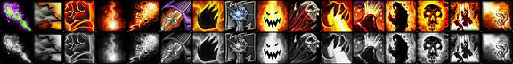
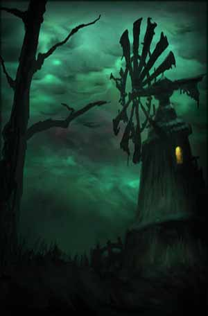
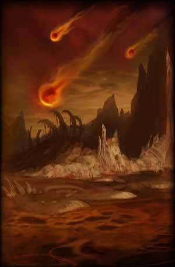

<html>
<head>
<script>
var _
var data=[]
data.n=7
_=data[0]=[]
_.n="Affliction"
_=data[0][0]=[2]
_.n="Suppression"
_.d="Reduces the chance for enemies to resist your Affliction spells by $%."
_.m=5
_.x=2
_.y=0
_=data[0][1]=[0.4]
_.n="Improved Corruption"
_.d="Reduces the casting time of your Corruption spell by $ sec."
_.m=5
_.x=3
_.y=0
_=data[0][2]=[[6,13,20]]
_.n="Improved Curse of Weakness"
_.d="Increases the effect of your Curse of Weakness by $%."
_.m=3
_.x=1
_.y=5
_=data[0][3]=[50]
_.n="Improved Drain Soul"
_.d="Gives you a $% chance to get a 100% increase to your Mana regeneration for 10 sec if the target is killed by you while you drain its soul. In addition your Mana may continue to regenerate while casting at 50% of normal."
_.m=2
_.x=2
_.y=5
_=data[0][4]=[10]
_.n="Improved Life Tap"
_.d="Increases the amount of Mana awarded by your Life Tap spell by $%."
_.m=2
_.x=3
_.y=5
_=data[0][5]=[2]
_.n="Improved Drain Life"
_.d="Increases the Health drained by your Drain Life spell by $%."
_.m=5
_.x=4
_.y=5
_=data[0][6]=[2]
_.n="Improved Curse of Agony"
_.d="Increases the damage done by your Curse of Agony by $%."
_.m=3
_.x=1
_.y=10
_=data[0][7]=[14]
_.n="Fel Concentration"
_.d="Gives you a $% chance to avoid interruption caused by damage while channeling the Drain Life, Drain Mana, or Drain Soul spell."
_.m=5
_.x=2
_.y=10
_=data[0][8]=[]
_.n="Amplify Curse"
_.d="Increases the effect of your next Curse of Weakness or Curse of Agony by 50%, or your next Curse of Exhaustion by 20%."
_.m=1
_.x=3
_.y=10
_.t=['Instant','3 min cooldown']
_=data[0][9]=[10]
_.n="Grim Reach"
_.d="Increases the range of your Affliction spells by $%."
_.m=2
_.x=1
_.y=15
_=data[0][10]=[2]
_.n="Nightfall"
_.d="Gives your Corruption and Drain Life spells a $% chance to cause you to enter a Shadow Trance state after damaging the opponent. The Shadow Trance state reduces the casting time of your next Shadow Bolt spell by 100%."
_.m=2
_.x=2
_.y=15
_=data[0][11]=[15]
_.n="Improved Drain Mana"
_.d="Causes $% of the Mana drained by your Drain Mana spell to damage the opponent."
_.m=2
_.x=4
_.y=15
_=data[0][12]=[]
_.n="Siphon Life"
_.d="Transfers 45 health from the target to the caster every 3 sec. Lasts 30 sec."
_.m=1
_.x=2
_.y=20
_.z=4
_.t=['365 Mana','30 yd range','Instant cast']
_=data[0][13]=[]
_.n="Curse of Exhaustion"
_.d="Reduces the target's speed to 90% of normal for 12 sec. Only one Curse per Warlock can be active on any one target."
_.m=1
_.x=3
_.y=20
_.r=[8,1]
_.t=['8% of base Mana','30 yd range','Instant cast']
_=data[0][14]=[5]
_.n="Improved Curse of Exhaustion"
_.d="Increases the speed reduction of your Curse of Exhaustion by $%."
_.m=4
_.x=4
_.y=20
_.r=[13,1]
_=data[0][15]=[2]
_.n="Shadow Mastery"
_.d="Increases the damage dealt or life drained by your Shadow spells by $%."
_.m=5
_.x=2
_.y=25
_.r=[12,1]
_=data[0][16]=[]
_.n="Dark Pact"
_.d="Drains 250 of your pet's Mana, returning 100% to you."
_.m=1
_.x=2
_.y=30
_.z=3
_.t=['20 yd range','','Instant']
_=data[1]=[]
_.n="Demonology"
_=data[1][0]=[10]
_.n="Improved Healthstone"
_.d="Increases the amount of Health restored by your Healthstone by $%."
_.m=2
_.x=1
_.y=0
_=data[1][1]=[10]
_.n="Improved Imp"
_.d="Increases the effect of your Imp's Firebolt, Fire Shield, and Blood Pact spells by $%."
_.m=3
_.x=2
_.y=0
_=data[1][2]=[3,1]
_.n="Demonic Embrace"
_.d="Increases your total Stamina by $% but reduces your total Spirit by $%."
_.m=5
_.x=3
_.y=0
_=data[1][3]=[10]
_.n="Improved Health Funnel"
_.d="Increases the amount of Health transfered by your Health Funnel spell by $%."
_.m=2
_.x=1
_.y=5
_=data[1][4]=[10]
_.n="Improved Voidwalker"
_.d="Increases the effectiveness of your Voidwalker's Torment, Consume Shadows, Sacrifice and Suffering spells by $%."
_.m=3
_.x=2
_.y=5
_=data[1][5]=[3]
_.n="Fel Intellect"
_.d="Increases the maximum Mana of your Imp, Voidwalker, Succubus, and Felhunter by $%."
_.m=5
_.x=3
_.y=5
_=data[1][6]=[10,10]
_.n="Improved Succubus"
_.d="Increases the effect of your Succubus' Lash of Pain and Soothing Kiss spells by $%, and increases the duration of your Succubus' Seduction and Lesser Invisibility spells by $%."
_.m=3
_.x=1
_.y=10
_=data[1][7]=[]
_.n="Fel Domination"
_.d="Your next Imp, Voidwalker, Succubus, or Felhunter Summon spell has its casting time reduced by 5 sec and its Mana cost reduced by 50%."
_.m=1
_.x=2
_.y=10
_.t=['Instant cast','15 min cooldown']
_=data[1][8]=[3]
_.n="Fel Stamina"
_.d="Increases the maximum Health of your Imp, Voidwalker, Succubus, and Felhunter by $%."
_.m=5
_.x=3
_.y=10
_=data[1][9]=[2,20]
_.n="Master Summoner"
_.d="Reduces the casting time of your Imp, Voidwalker, Succubus, and Felhunter Summoning spells by $ sec and the Mana cost by $%."
_.m=2
_.x=2
_.y=15
_.r=[7,1]
_=data[1][10]=[4]
_.n="Unholy Power"
_.d="Increases the damage done by your Voidwalker, Succubus, and Felhunter's melee attacks by $%."
_.m=5
_.x=3
_.y=15
_=data[1][11]=[2,2]
_.n="Improved Enslave Demon"
_.d="Reduces the Attack Speed and Casting Speed penalty of your Enslave Demon spell by $% and reduces the resist chance by $%."
_.m=5
_.x=1
_.y=20
_=data[1][12]=[]
_.n="Demonic Sacrifice"
_.d="When activated, sacrifices your summoned demon to grant you an effect that lasts 30 min. The effect is canceled if any Demon is summoned.<br><br>Imp: Increases your Fire damage by 15%.<br><br>Voidwalker: Restores 3% of total Health every 4 sec.<br><br>Succubus: Increases your Shadow damage by 15%.<br><br>Felhunter: Restores 2% of total Mana every 4 sec."
_.m=1
_.x=2
_.y=20
_.t=['100 yd range','','Instant']
_=data[1][13]=[15]
_.n="Improved Firestone"
_.d="Increases the bonus Fire damage from Firestones and the Firestone effect by $%."
_.m=2
_.x=4
_.y=20
_=data[1][14]=[4,2,2,0.2]
_.n="Master Demonologist"
_.d="Grants both the Warlock and the summoned demon an effect as long as that demon is active. Imp - Reduces threat caused by $%. Voidwalker - Reduces physical damage taken by $%. Succubus - Increases all damage caused by $%. Felhunter - Increases all resistances by $ per level."
_.m=5
_.x=3
_.y=25
_.r=[10,5]
_=data[1][15]=[]
_.n="Soul Link"
_.d="When active, 30% of all damage taken by the caster is taken by your demon instead. In addition, both the demon and the master will inflict 3% more damage. Lasts as long as the demon is active."
_.m=1
_.x=2
_.y=30
_.r=[12,1]
_.t=['20% of base Mana','100 yd range','Instant cast']
_=data[1][16]=[15]
_.n="Improved Spellstone"
_.d="Increases the amount of damage absorbed by your Spellstone by $%."
_.m=2
_.x=3
_.y=30
_=data[2]=[]
_.n="Destruction"
_=data[2][0]=[4]
_.n="Improved Shadow Bolt"
_.d="Your Shadow Bolt critical strikes increase the next 4 sources of Shadow damage dealt to the target by $%.  Effect lasts a maximum of 12 sec."
_.m=5
_.x=2
_.y=0
_=data[2][1]=[1]
_.n="Cataclysm"
_.d="Reduces the Mana cost of your Destruction spells by $%."
_.m=5
_.x=3
_.y=0
_=data[2][2]=[0.1,0.4]
_.n="Bane"
_.d="Reduces the casting time of your Shadow Bolt and Immolate spells by $ sec and your Soul Fire spell by $ sec."
_.m=5
_.x=2
_.y=5
_=data[2][3]=[2]
_.n="Aftermath"
_.d="Gives your Destruction spells a $% chance to daze the target for 5 sec."
_.m=5
_.x=3
_.y=5
_=data[2][4]=[0.5]
_.n="Improved Firebolt"
_.d="Reduces the casting time of your Imp's Firebolt spell by $ sec."
_.m=2
_.x=1
_.y=10
_=data[2][5]=[3]
_.n="Improved Lash of Pain"
_.d="Reduces the cooldown of your Succubus' Lash of Pain spell by $ sec."
_.m=2
_.x=2
_.y=10
_=data[2][6]=[1]
_.n="Devastation"
_.d="Increases the critical strike chance of your Destruction spells by $%."
_.m=5
_.x=3
_.y=10
_=data[2][7]=[]
_.n="Shadowburn"
_.d="Instantly blasts the target for 450 to 502 Shadow damage. If the target dies from Shadowburn, and yields experience or honor, the caster gains a Soul Shard."
_.m=1
_.x=4
_.y=10
_.z=6
_.t=['365 Mana','20 yd range','Instant cast','15 sec cooldown','Reagents: Soul Shard']
_=data[2][8]=[35]
_.n="Intensity"
_.d="Gives you a $% chance to resist interruption caused by damage while channeling the Soul Fire, Rain of Fire or Hellfire spell."
_.m=2
_.x=1
_.y=15
_=data[2][9]=[10]
_.n="Destructive Reach"
_.d="Increases the range of your Destruction spells by $%."
_.m=2
_.x=2
_.y=15
_=data[2][10]=[2]
_.n="Improved Searing Pain"
_.d="Increases the critical strike chance of your Searing Pain spell by $%."
_.m=5
_.x=4
_.y=15
_=data[2][11]=[13]
_.n="Pyroclasm"
_.d="Gives your Soul Fire, Rain of Fire and Hellfire spells a $% chance to stun the target for 3 sec."
_.m=2
_.x=1
_.y=20
_.r=[8,2]
_=data[2][12]=[5]
_.n="Improved Immolate"
_.d="Increases the initial damage of your Immolate spell by $%."
_.m=5
_.x=2
_.y=20
_=data[2][13]=[]
_.n="Ruin"
_.d="Increases the critical strike damage bonus of your Destruction spells by 100%."
_.m=1
_.x=3
_.y=20
_.r=[6,5]
_=data[2][14]=[2]
_.n="Emberstorm"
_.d="Increases the damage done by your Fire spells by $%."
_.m=5
_.x=3
_.y=25
_=data[2][15]=[]
_.n="Conflagrate"
_.d="Ignites a target that is already afflicted by Immolate, dealing 447 to 557 Fire damage and consuming the Immolate spell."
_.m=1
_.x=2
_.y=30
_.z=4
_.r=[12,5]
_.t=['255 Mana','30 yd range','Instant cast','10 sec cooldown']
</script>
</head>
<body>
<!--[if lte IE 6]>






<![endif]-->
</body>
</html>